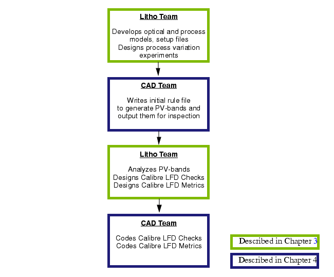

Generating
process-specific Calibre LFD kits for design verification is a cooperative
effort involving lithographers and rule writers. Depending on the
size of your organization, this will be one team or two, one person
or many. For simplicity, the assumption is that there are two separate
teams: the litho team and the CAD team.
Figure 1. Developing Process-Specific Calibre LFD Kits
Because it is likely
there are two different teams, the litho team and the CAD team,
each with their own area of expertise, these tasks are divided between
two chapters:
In the event
your organization has a single team composed of lithographers and
rule writers, the links below are organized according to the sequence
of tasks that your team is most likely to follow.
Defining Process Variation Experiments
Creating Optical Models
Writing the Rule File for Generating PV-Bands
Visualizing PV-Band Data Using Calibre RVE
Using PV-Bands to Identify Failure Spots
Metrics to Score a Process or Design
Translating Failures into Rules
Coding Metrics to Score a Process or Design
The following information is primarily
for the litho team, but it is also useful for the CAD team.